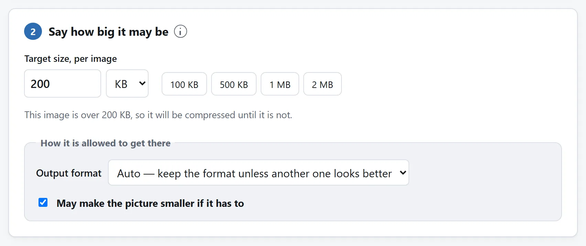
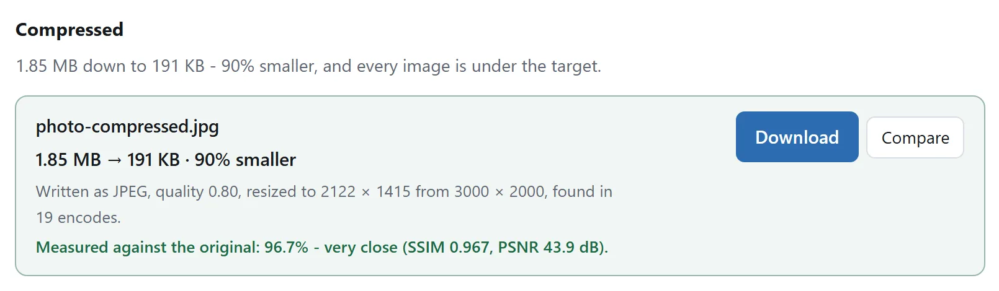

先说结论
打开图片压缩，把照片丢进去，把人家给你的那个数字打进去，按按钮。它会把图编码好几遍，留下能塞进目标、又最好的那一份，并告诉你这一下花了多少。老实说，大多数照片配大多数目标，你根本看不出差别。
这一页剩下的部分，是给看得出差别的情况准备的：结果发糊了、PNG 几乎压不动，或者你想在把图发给别人之前，先弄清这个工具到底对它做了什么。

表单、附件和能读清的扫描件
申请同时规定像素和文件大小。先读允许的格式，用图片缩放裁剪到所需尺寸，再在这里填字节预算，关掉“必要时可以缩小图片”。要求 JPEG 就明确选择 JPEG。成品不仅要查大小，也要查尺寸和格式；文件够小而尺寸不对仍不合格。
一封邮件里的多张照片。目标对每张图分别生效，按总附件预算分配单图上限。ZIP 只把结果装在一起，已压缩图片不一定还能大幅缩小。
客服所需收据或截图。细字重要就先试 PNG，检查下载件最小文字。过低目标可能缩到无法阅读。保留大些的副本，或先裁掉无关边框，再决定是否继续损失细节。
一个文件大小限制，实际上是在要什么
JPEG 和 WebP 存的不是你的照片，是对这张照片的一段描述，而质量设置决定这段描述允许有多细。调低它，文件就小，因为描述变糙了：细腻的纹理被平均掉，渐变出现色带，边缘泛起一圈淡淡的块状光晕。
大小限制就是细节预算。值得问的不是“能不能压到 500 KB 以下”，而是“要舍弃多少画面信息才能达到目标，这些损失会不会影响用途”。
两条经验。真实场景的照片，人脸、树叶、布料，很能藏住压缩痕迹，因为眼睛在里面找不到一块绝对平的地方去挑毛病。而截图、图表、logo，以及任何有大片纯色和硬边文字的东西，一压就露，这类本来就该用 PNG 或者 WebP，而不是 JPEG。
为什么没有公式，以及那该怎么办
没有哪个算式能算出“质量调到几才刚好出一个 500 KB 的文件”。这两者之间的关系完全取决于画面内容：同样的设置下，一张大白墙的照片可能只有一张森林照片的十分之一大。凡是丢给你一句“质量：60”然后听天由命的工具，都是在替你猜。
唯一靠得住的办法是试。编一遍，看看多大，调一调，再编一遍。手动干这事很烦，所以压缩工具才改成问你要一个质量数字，等于把这份烦琐推给了你。自动干下来大约是八次编码，而一张手机照片编八次，本世纪出的任何机器都是零点几秒的事，所以本站这个工具改成问你要大小，搜索它自己来。
它报出来的每一个大小，都是真编出来的文件，不是估算。碰上有硬性上限的表单，这一点很要紧：一个乐观了 2% 的估算，等于一次被打回来的上传。
先花质量，再动像素
把一个图片文件变小，只有两条路。一是把同一张画面描述得粗糙些，这是质量；二是描述更少的像素，这是缩尺寸。两者不等价，而且先后有讲究。
质量先花，因为头上大约 30% 的质量降幅，在照片上是真看不出来的，你扔掉的是格式本来存得比任何眼睛都仔细的那部分细节。像素后动，因为质量一旦降到痕迹开始露出来，那么一张尺寸小一点、画质还体面的图，就比一张全尺寸却被压烂的图好看。像素少一点但个个干净，胜过多一堆全糊了。
整套策略就这么点东西，哪怕你用的是别的工具也值得记住：把质量往下调，调到开始不对劲了，就别再往下调，改成把图做小。
什么时候该主动缩尺寸
有时候那些像素本来就是多余的。一张 4000 像素宽的照片，放在网页上一栏 600 像素宽的位置里，扛着的是六倍于谁能看见的细节。你要是清楚这张图最终待在哪儿，先按那个尺寸缩一下，大小问题往往就没了，一点质量都不用花。干这活的是图片缩放，怎么挑尺寸，它自己那篇指南里讲了。
挑格式
值得知道的格式有三种，浏览器三种都能写。
- JPEG 是给照片用的。有损，但有史以来的东西都认得它，拍真实场景的照片用它至今仍是好选择。它存不了透明。
- WebP 干同样的活，干得更好：同等的、你分辨不出来的画质下，比 JPEG 小 25% 到 35% 左右，而且保得住透明。现在的浏览器都读它。少数老一点的桌面软件，还有一些公司的上传表单，仍然不认，这是不用它的唯一实在理由。
- PNG 是无损的，也就是又精确又大。截图、logo、线稿，以及任何有硬边或者大片纯色的东西，用它是对的；照片用它是错的。
要文件的那一方没提别的要求，那就用 WebP，同样压到目标，它留下的可见损伤比 JPEG 少。文件要送进一个老系统，或者送进一个你没法测试的系统，那 JPEG 是稳妥答案。
为什么你的 PNG 压不下去多少
这是最常见的意外，而且不是你手上那个工具的 bug。PNG 是无损格式，存的是一模一样的像素，也没有质量这个旋钮可拧，拧了它就成另一种格式了。PNG 压缩器能做的，只是把同样那些像素打包得更聪明些，通常也就省下百分之几。
所以，文件必须小很多、而且必须还是 PNG，那剩下的杠杆只有尺寸：像素少一点，或者颜色少一点。要是它不非得是 PNG 不可，那就得看里面装的是什么：
- 存成 PNG 的照片。这种情况很常见，往往是误选。转换成 JPEG 或 WebP，常能缩小五到十倍而没有明显可见变化。
- 截图或图表。试试 PNG 转 WebP 工具的 Lossless 模式，并检查实际节省了多少。这个目标大小压缩器搜索的是有损 WebP，没有无损模式。JPEG 可能让文字边缘变模糊。
- 带透明的标志。WebP 保留透明。JPEG 会填上纯色，通常不是你要的效果。
怎么判断压完的还能不能用
看缩略图什么都证明不了，缩略图大小下什么都挺好。有两个更靠谱的办法：
按全尺寸看，盯着画面里最平的那块地方。天空、皮肤、刷过漆的墙。压缩损伤最先出现在平滑的渐变里，表现为淡淡的方块或者色带，而那时细节丰富的区域还完全没事。
工具要是给了测量值，就读一读。这里的压缩工具会把自己压出来的结果解码回去，跟原图比对，报出 SSIM。这个数字比的是局部的明暗、对比和结构，而不是数一数多少像素变了，更接近人眼在意的东西。大约在 0.98 以上，两张图并排看已经很难分辨；低到 0.95 以下，发之前先自己看一眼。它同时也报 PSNR，就是传统的那个分贝值，给习惯看它的人。
两个数都在你自己的机器上算出来、摆给你看，而这正是它们的意义：把“质量损失很小”从一句宣称，变成一个你能核对的数字。

发文件之前，有三件事值得知道
重新编码会去掉原元数据。已低于目标的文件会原样返回，元数据也保留。需要处理的图片先解码成像素，再重新编码。画布没有原标签，所以 GPS、相机型号、时间戳等不会写入新文件。通常这是额外的好处。如果只想删除标签，不改画面，用 EXIF 查看与清除工具。它重写容器，不重新压缩图片。对应指南解释里面有什么。
同一个文件绝不要压第二遍。每一次有损编码都会永久扔掉一些细节，而对一张已经压过的图再编一次，扔掉的更多，因为它会老老实实把第一遍留下的压缩痕迹也保住，代价是真正的细节。永远回到原图，只压一次。
留住原图。有损编码没有回头路。不管你最后发出去的是哪一版，一开始那个文件，找个地方留着。
这些事一样都不用上传
浏览器自带 JPEG、PNG 和 WebP 编码器已经很多年了，那就是把画布里的图存下来时用的同一段代码。压缩图片属于那类在技术上根本没理由牵扯服务器的活，所以这里的工具也就没有服务器：解码、编码、测量都在你自己的机器上，而页面的 Content-Security-Policy 里，没有一个属于本站的地址可以把图送过去。
想确认这一点，不管在这儿还是在别处，最省事的办法都是：把页面打开，断开网络，照压一张试试。还能用，就说明什么都没上传。把文件传给在线转换器安全吗？里还有另外三个同类检查。